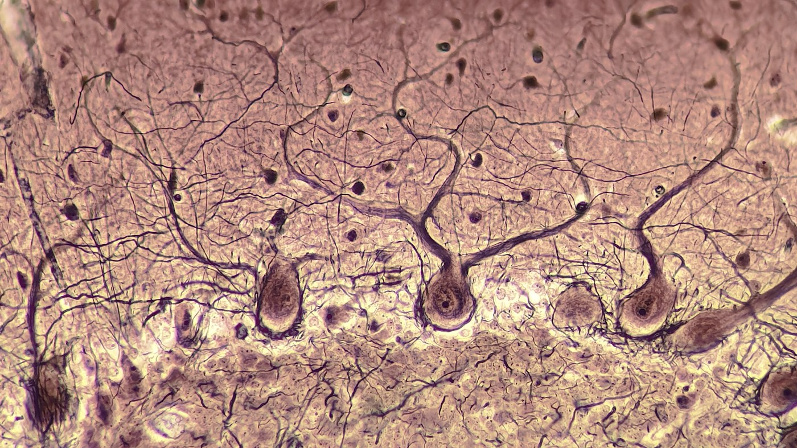

Distal sensitivity and the mark of the noncognitive
A research essay separating causal, informational and normative readings of distal sensitivity and testing them against Kalman filters, internal-model controllers and bacterial memory.
A research essay separating causal, informational and normative readings of distal sensitivity and testing them against Kalman filters, internal-model controllers and bacterial memory.
An essay on motor signals, intentional binding and the sense of agency, examining the evidential difference between contribution, constitutive necessity and production claims.
A critical review of predictive-processing accounts of spirit possession, using Zar rituals in Hormozgan as a test case and distinguishing private inference from the public inference of ritual specialists.
A nearly complete Persian translation of Peggy Seriès’ MIT Press textbook, with publication rights under discussion through a Persian publisher.
Ongoing systematic and scoping reviews on TMS–EEG perturbational complexity, sleep-related moderators of TMS plasticity, respiratory interoception, metacognition and bodily self-consciousness.
